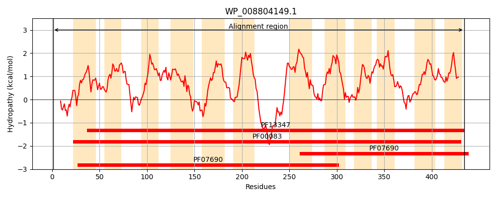
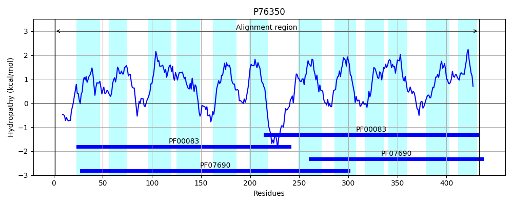
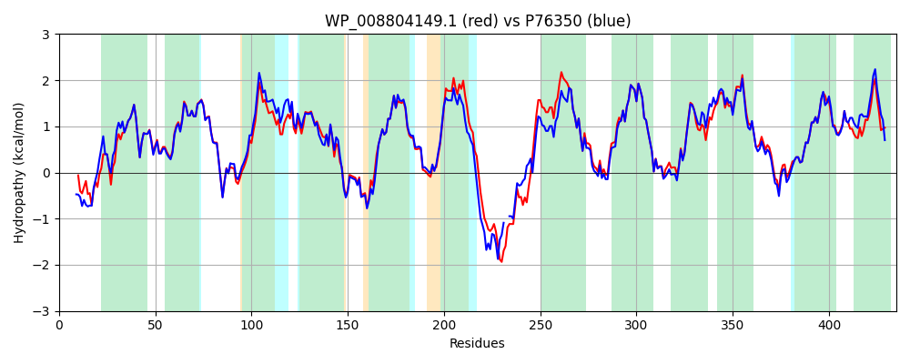

Hit Accession: P76350
Hit TCID: 2.A.1.6.6
Hit Description: gnl|BL_ORD_ID|11461 gnl|TC-DB|P76350|2.A.1.6.6 Shikimate transporter - Escherichia coli.
Mach Len: 435
e:0.000000
Query TMS Count : 12
Hit TMS Count: 12
TMS-Overlap Score: 12.250000
Predicted Substrates:CHEBI:5584;hydron, CHEBI:9133;shikimic acid
BLAST Alignment:
Score: 1951 , Bit scores: 756 bits, E-value: 0.0e+00, Alignment length: 435, Percentage identity: 86
Query: 1 MDST-ISVQPAEAPDSLLRARRAAWGSFAGAVVDWYDFLLYGITAALVFNREFFPQIGPAMGTLAAFATFGVGFLFRPLGGIIFGHFGDRLGRKRMLMMTVWMMGIATACIGLLPSFSQIGWWAPALLVFLRAVQGFAVGGEWGGAALLSVENAPQGKKAFYSSGVQVGYGVGLLLSTGLVSLISSLTTDEQFLSWGWRLPFLFSVVLVLIALWIRNGMAESQEFEAQQSQANLQPEKKRLPVVEALLRHPGAFLLIIALRLCELLTMYIVTAFALNYSTQNLGLPRELFLNIGLLVGGLSCLTIPCFAWLADRFGRRRIYITGALIGTLSGFPFFMALESQSVFWILFFALMLANIAHDMVVCVQQPMFTELFGASYRYSGAGVGYQVASVVGGGFTPFIAAALVTFSGGSWHSVALYLTAGCLLSALTALLMK 434
MDST IS +P E SL RARRAA GSFAGAVVDWYDFLLYGITAALVFNREFFPQ+ PAMGTLAAFATFGVGFLFRPLGG+IFGHFGDRLGRKRMLM+TVWMMGIATA IG+LPSFS IGWWAP LLV LRA+QGFAVGGEWGGAALLSVE+AP+ KKAFYSSGVQVGYGVGLLLSTGLVSLIS +TTDEQFLSWGWR+PFLFS+VLVL ALW+RNGM ES EFE QQ KKR+PV+EALLRHPGAFL IIALRLCELLTMYIVTAFALNYSTQN+GLPRELFLNIGLLVGGLSCLTIPCFAWLADRFGRRR+YITG LIGTLS FPFFMALE+QS+FWI+FF++MLANIAHDMVVCVQQPMFTE+FGASYRYSGAGVGYQVASVVGGGFTPFIAAAL+T+ G+WHSVA+YL AGCL+SA+TALLMK
Sbjct: 1 MDSTLISTRPDEGTLSLSRARRAALGSFAGAVVDWYDFLLYGITAALVFNREFFPQVSPAMGTLAAFATFGVGFLFRPLGGVIFGHFGDRLGRKRMLMLTVWMMGIATALIGILPSFSTIGWWAPILLVTLRAIQGFAVGGEWGGAALLSVESAPKNKKAFYSSGVQVGYGVGLLLSTGLVSLISMMTTDEQFLSWGWRIPFLFSIVLVLGALWVRNGMEESAEFEQQQHYQ--AAAKKRIPVIEALLRHPGAFLKIIALRLCELLTMYIVTAFALNYSTQNMGLPRELFLNIGLLVGGLSCLTIPCFAWLADRFGRRRVYITGTLIGTLSAFPFFMALEAQSIFWIVFFSIMLANIAHDMVVCVQQPMFTEMFGASYRYSGAGVGYQVASVVGGGFTPFIAAALITYFAGNWHSVAIYLLAGCLISAMTALLMK 433 | Protein Hydropathy Plots: |
|---|
|  |  |
Pairwise Alignment-Hydropathy Plot:
|
|---|
|  |